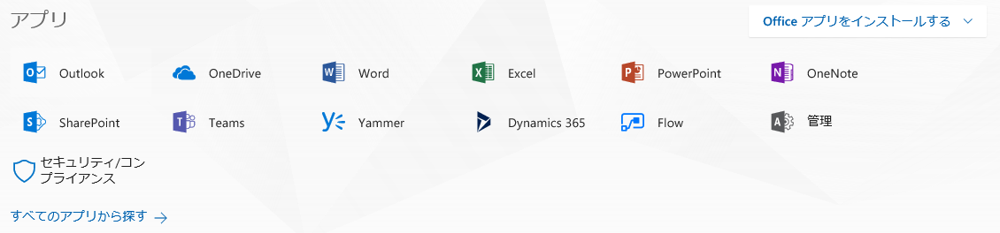

こんにちは。いつも Office 365 を利用いただきまして、ありがとうございます。
今回は、Office 365 タイルの非表示方法について、ご紹介いたします。
Office 365 ポータルにアクセスしますと、トップページやアプリランチャーに各サービスのタイルが表示されます。
管理者側で指定したサービスのみユーザーに使用させるには、不要なタイルを非表示に設定することが有効です。

タイルを非表示にするには、基本的には、ユーザーに付与されたライセンスの中でサービスプランを無効化する方法となりますが、「ストア」のみ Office 365 管理センターのメニュー（サービスとアドイン）にて設定を行います。
下記では、2018/4/3時点の Office 365 Enterprise E5 を使用している環境を元に手順をご案内いたします。
各サービスごとにブログが公開しておりますので、今回の投稿は、まとめページとして参照いただけますと幸いです。
Exchange Online 関連
Outlook、予定表、連絡先、タスク、MyAnalytics
Exchange Online 製品群である上記のタイルは Exchange Online 製品のライセンスを削除することで、非表示にすることが可能です。
※下記のサービスは、Exchange Online と依存関係があるため、サービスプランの追加 / 削除を行う際は、一緒に操作する必要があります。
- MyAnalytics（EXCHANGE_ANALYTICS）
- Office 365 Threat Intelligence（THREAT_INTELLIGENCE）
Platform 関連
ストア
Office 365 管理センターの設定メニュー [サービスとアドイン] - [ユーザーが所有するアプリとサービス ] からタイルの非表示が可能です。すべてのユーザーが非表示の対象となります。
SharePoint Online 関連 1
SharePoint、OneDrive
SharePoint 管理センターの設定メニュー (オプションの表示または非表示) からタイルの非表示が可能です。すべてのユーザーが非表示の対象となります。
ただし、URL <例. https://contoso.sharepoint.com/_layouts/15/sharepoint.aspx> および <例. https://contoso-my.sharepoint.com/_layouts/15/MySite.aspx?MySiteRedirect=AllDocuments> より直接 SharePoint ホーム ページおよび OneDrive for Business にアクセスすることは可能です。
参考情報
OneDrive および SharePoint アプリのタイルを非表示にする
https://support.office.com/ja-jp/article/d5e8dc9a-73f8-45e4-93b4-8e55b546a5af
ニュースフィード
SharePoint 管理センターの設定メニュー (エンタープライズ イベントのグループ作業) からタイルの非表示が可能です。すべてのユーザーが非表示の対象となります。
ただし、URL <例. https://contoso-my.sharepoint.com/default.aspx> より直接 Newsfeed にアクセスすることは可能です。
Delve
SharePoint 管理センターの設定メニュー (Office Graph) からタイルの非表示が可能です。すべてのユーザーが非表示の対象となります。
ただし、URL https://jpn.delve.office.com より直接 Delve にアクセスすることは可能ですが、Office Graph 機能により表示されていたコンテンツは非表示となります。
Video
SharePoint 管理センターの設定メニュー (ストリーミング ビデオ サービス) からのタイルの非表示が可能です。すべてのユーザーが非表示の対象となります。
Office 365 Video にアクセスできなくなる動作となります。
Stream
Stream 製品については、Stream のユーザーからライセンスを削除することで、タイルの非表示が可能です。
ただし、URL https://web.microsoftstream.com/ より直接 Stream にアクセスし会社全体に公開されたビデオの閲覧を行うことが可能です。
参考情報
Microsoft Stream を PowerShell を使用して一括で有効化、無効化する方法について
https://blogs.technet.microsoft.com/sharepoint_support/2017/06/21/microsoft-stream-を-powershell-を使用して一括で有効化、無効化する方/
Yammer
Yammer 製品については、Yammer のライセンスをユーザーから削除することで、タイルの非表示が可能です。
ただし、Yammer ネットワーク上でライセンスを保持していないユーザーのログインをブロックしていない場合、URL を直接入力することで Yammer にログインすることが可能です。
参考情報
Office 365 での Yammer ユーザー ライセンスの管理
https://support.office.com/ja-jp/article/office-365-での-yammer-ユーザー-ライセンスの管理-34a67e3a-3fd8-4e54-bffb-dd5ad0e48590
SharePoint Online 関連 2
Planner
Planner 製品については、Planner のライセンスをユーザーから削除することで、タイルの非表示が可能です。
ライセンスを無効化した場合でも、URL直接アクセスを行うことで、Planner の機能は利用可能です。
ライセンスが無効化されている状態であっても、直接 https://tasks.office.com に直接アクセスすることで、Planner 機能を使用することが可能です。
参考情報
Microsoft Planner を PowerShell を使用して一括で有効化、無効化する方法について
https://blogs.technet.microsoft.com/sharepoint_support/2016/05/27/office-365-planner-powershell-enable-disable/
Microsoft Planner にて一般ユーザーによるプラン作成を制限する方法について (V2)
https://blogs.technet.microsoft.com/sharepoint_support/2017/03/27/microsoft-planner-plan-creation-restriction-v2/
Sway
Sway 製品については、Sway のライセンスをユーザーから削除することで、タイルの非表示が可能です。
ライセンスを無効化されたユーザーは Sway にアクセスできなくなる動作となります。
参考情報
Office 365 Sway を PowerShell を使用して一括で有効化、無効化 (停止) する方法について
https://blogs.technet.microsoft.com/officesupportjp/2016/06/08/office-365-sway-enable-disable/
Forms
Forms 製品については、Forms のライセンスをユーザーから削除することで、タイルの非表示が可能です。
参考情報
Office 365 の Microsoft Forms を PowerShell を使用して一括で有効化、無効化 (停止) する方法について
https://blogs.technet.microsoft.com/officesupportjp/2016/06/29/office-365-forms-enable-disable/
Office Online 関連
Word、Excel、PowerPoint、OneNote
Office Online 製品の関連タイルである、Excel、Word、PowerPoint、OneNote の 4 点については、SharePoint Online および Office Online のライセンスを両方削除ことで、アプリケーション ランチャー上のタイルが非表示となります。
Data Platform 関連
PowerApps、Flow、PowerBI
それぞれの製品ライセンスを削除することで、タイルの非表示が可能です。
Dynamics 365
Dynamics 365 製品については、同じ製品群に属する PowerApps と Microsoft Flow のライセンスを合わせて削除する必要があります。
参考情報
Microsoft Flow/PowerApps （Dynamics 365）の非表示について
https://blogs.msdn.microsoft.com/jpsql/2016/11/21/microsoft-flowpowerapps-の非表示について/
How to remove Dynamics 365 app in applauncher
https://answers.microsoft.com/en-us/msoffice/forum/msoffice_o365admin-mso_dep365/how-to-remove-dynamics-365-app-in-applauncher/712ecca2-0652-4beb-bb6b-d680d825d597?auth=1
Skype for Business 関連
Teams
Teams 製品については、Teams のライセンスを削除することで、タイルの非表示が可能です。
参考情報
はじめよう Microsoft Teams 第2回
https://blogs.technet.microsoft.com/teamsjp/2017/09/27/start-teams-2/
その他
StaffHub、To-Do
それぞれの製品ライセンスを削除することで、タイルの非表示が可能です。
参考情報
ユーザーのライセンス（サービスプラン）変更方法につきましては、下記のブログも合わせて参照ください。
Office 365 のライセンス管理
https://blogs.technet.microsoft.com/exchangeteamjp/2018/04/02/office365-license-management/
今後も Office 365 サービスに関する有益な情報を発信してまいりますので、弊社サポート ブログをよろしくお願いいたします。